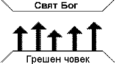
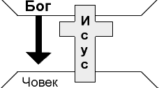
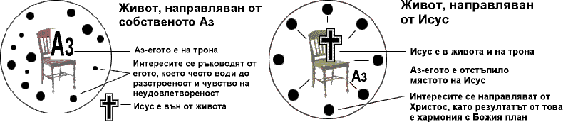

“Защото Бог толкова възлюби света, че даде Своя Единороден Син, за да не погине ни един, който вярва в Него, но да има вечен живот” (Йоан 3:16)
Христос казва : “Аз дойдох да имат живот, и да го имат изобилно" (да живеят пълноценно и смислено) (Йоан 10:10)
Защо повечето хора не живеят така пълноценно?“Понеже всички съгрешиха и не заслужават да се прославят от Бога” (Римляни 3:23). Човекът е създаден да има общение (близка духовна връзка) с Бога, но той избра да върви по собствен, независим от Бога път и общението му с Бога бива прекратено. Тази своеволност се изразява в активно отхвърляне или пасивно безразличие и Библията я нарича "грях".
“Защото заплатата на греха е смърт” (духовна отделеност от Бога) (Римляни 6:23).
 Тази схема показва нагледно, че Бог е свят, а човекът - грешен. Между тях съществува огромна бездна. Стрелките показват, че всички опити на човека да достигне до Бога и да живее пълноценно посредством добри дела, спазване на традиции и ритуали, самоусъвършенстване и др. са неуспешни.
Третият принцип обяснява единственият начин да поставим мост над бездната…"Но Бог препоръчва (изяви) своята към нас любов в това, че когато още бяхме грешници, Христос умря за нас" (Римляни 5:8).
"Христос умря за греховете ни... бе погребан... биде възкресен на третия ден според Писанията... и се яви на Кифа, после на дванадесетте, след това се яви на повече от петстотин..." (1 Коринтяни 15:3-6).
"Исус му казва: Аз съм пътят, истината и животът; никой не дохожда при Отца, освен чрез Мене" (Йоан 14:6).
 Тази схема показва нагледно как Бог поставя мост над бездната, която ни разделя от Него, като изпраща Своя Син Исус Христос да умре на кръста вмeсто нас, за да понесе наказанието за нашите грехове.
"А на ония, които Го приеха, даде право да станат Божии чада, сиреч на тия, които вярват в Неговото име" (Йоан 1:12)
"Защото по благодат (милост) сте спасени, чрез вяра, и то не от сами вас; това е дар от Бога; не чрез дела, за да не се похвали никой" (Ефесяни 2:8-9).
(Прочетете Йоан 3:1-8.)
Христос казва: "Ето, стоя на вратата и хлопам, ако чуе някой гласа ми и отвори вратата, ще вляза при него" (Откровение 3:20).
Да приемем Христос означава да се обърнем от себе си към Бога (покаяние) и да се доверим на Христос да влезе в живота ни, за да опрости греховете ни и да ни направи такива, каквито искаме да бъдем. Не е достатъчно само да признаваме, че Исус Христос е Божият Син и че е умрял на кръста заради греховете ни, нито само да имаме необичайини религиозни преживявания. Приемането на Исус Христос става с обмислено решение, взето с вяра.
Тези два кръга показват два начина на живот:

Кой кръг отразява начина ви на живот по-добре?
Кой кръг бихте искали да отразява начина ви наживот?
Бог познава сърцата ни и се интересува не толкова от нашите думи, колкото от отношението и мотивите ни. Ето една примерна молитва:
"Господи Исусе, нуждая се от Теб. Благодаря Ти, че умря на кръста заради мен. Моля Те, прости ми греховете. Отварям сърцето си за Теб и Те приемам за мой Спасител и Господ. Благодаря Ти, че опрощаваш греховете ми и че ми даваш вечен живот. Застани начело на живота ми и ме направи такъв, какъвто искаш да бъда! Амин (да бъде)."Тази молитва съответства ли на искреното ви желание?
Ако е така, още сега се помолете с нея и Христос ще влезе в живота ви, както е обещал.
Приехте ли Христос в живота си? Според Неговото обещание в Откровение 3:20 къде е Той сега по отношение на вас? Христос казва, че ще влезе в живота ни. Той би ли ни подвел? На какво основавате увереността си, че Бог е отговорил на молитвата ви? (На верността на самия Бог и на Неговото Слово)
"И свидетелството е това, че Бог ни е дал вечен живот, и че тоя живот е в Сина му. Който има Сина, има тоя живот; който няма Сина, няма тоя живот. Това писах на вас, които вярвате в името на Божия Син, за да знаете, че имате вечен живот" (1 Йоан 5:11-13).
Не спирайте да благодарите на Бога, че Христос е в живота ви и че никога няма да ви напусне (Евреи 13:5). Можете да сте сигурни, че от момента, в който сте отворили сърцето си за Него, Той е заживял във вас и вие имате вечен живот, понеже това е Неговото обещание. Той няма да ви излъже.
Не забравяйте и още нещо...Ние можем винаги да разчитаме на Бога и на обещанията Му от Библията, но не и на чувствата си. Християнинът живее чрез вяра (упование) във верността на самия Бог и на Неговото Слово. Влакът показва нагледно връзката между факта (Бога и Неговото Слово), вярата (нашето упование в Бога и Словото Му) и чувствата (следствие от вярата и покорството ни) (Йоан 14:21).
Няколко неща са се случили в момента, в който чрез вяра сте приели Христос:
Има ли нещо по-чудесно от това - да приемете Исус Христос? Искате ли още сега да благодарите на Бога за всичко, което е направил за вас? Чрез благодарността си към Бога изразяваме своята вяра в Него.
За да се радвате на новият си живот в пълнота...Духовният растеж е следствие от уповаването в Исус Христос. "Праведният чрез вяра ще живее" (Галатяни 3:11). Когато живеем чрез вяра, ще можем все повече и повече да се уповаваме (доверяваме) на Бога за всяко нещо в живота си и да следваме тези насоки:
| Р | Разговаряйте с Бога в молитва ежедневно (Йоан 15:7). |
|---|---|
| А | Азбуката на живота е Божието Слово. Четете го всеки ден (Деяния 17:11). Започнете с Евангелието от Йоан. |
| С | Станете покорни на Бога (Матей 4:19; Йоан 15:8). |
| Т | Търсете случаи да говорите за Христос с думите и делата си (Йоан 14:21). |
| Е | Ежедневно му се доверявайте на всяка стъпка от живота си (1 Петър 5:7). |
| Ж | Живейте по Духа. Оставете Светия Дух да дава насоки и сила да живеете и свидетелствате всеки ден (Галатяни 5:16-17; Деяния 1:8). |
Божието Слово ни призовава да не преставаме да се събираме заедно... (Евреи 10:25). Няколко главни накуп горят буйно, но ако извадим някоя от тях настрана, тя започва да тлее и угасва. Така е и при общуването ни с другите християни.
Ако все още не ходите на църква, не чакайте покана. Добрата църква е тази, в която хората обичат Исус Христос и проповядват Неговото Слово - Библията.